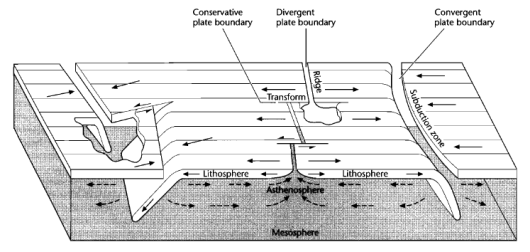
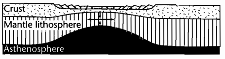
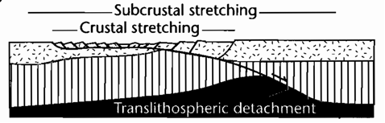
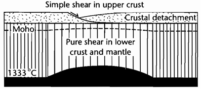
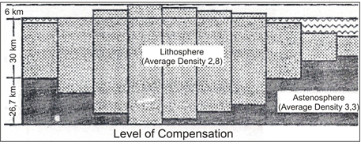

1 Introduction to Basin
A basin by Einsele (2000) is defined as a place where sediment can be accumulated with enough thickness and preserved in a long duration in geological time-frame. According to “Basin Analysis: Principles and Applications” (2005) by Allen & Allen, a basin is defined as a lower relief structure in comparison to earth surface.
A basin can be classified into several types based on its lithospheric substratum (continental, oceaning, and transitional), position to intracratonic plate margin, and the type of plate movement close to the basin (divergent, convergent, and transform).

The mechanism in which governs the basin forming cannot be separated from processes happening inside the lithosphere, which consist of multiple plates interacting towards each others. This interaction between plates is shown by the plate margins that moves towards each other (convergent), separated toward each others (divergent), and plates that are moving side-by-side each others (transform), as shown in Figure 1.1.
According to “Basin Analysis: Principles and Applications” (2005), basin-forming mechanism can be grouped into three categories:
Isostatic consequences of changes in crustal/lithospheric thickness, caused by the lithospheric stretching or purely caused by thermal, happening simultaneously with the cooling of sea crust which moves away from MOR (Mid-Oceanic Ridge) area.
Loading and unloading lithosphere, due to flexural deflection/ deformation which can also be followed by uplifting and subsidence, similar to forefront basin forming.
Dynamic topography. Viscous flow from mantle that causes non-permanent uplifting and subsidence.
Based on the three above points, there are two parent groups of basin-forming, which are:
Basin formed by the lithospheric stretching, can be a rift-drift (divergent movement), and
Basin formed by the flexing (flexural) of earth crust or sea crust.
1.1 Basin Forming
A basin can be formed only when there is a divergent force on the lithosphere. In this sub-chapter, we will be discussing about the mechanism based on litospheric stretching and flexural.
1.1.1 Lithospheric Stretching
Lithospheric stretching is a divergent move on plate that happened because of the pull force of a plate. This force can be caused by pure pull forces like in between plate margins that moves away from each other (divergent), on the adjacent plate margin (transform) due to second order force that creates pull-apart basin, or on plate margin where it moves closer to each other (convergent) as a release-force after compression regime.
When a lithosphere expoed to lithospheric stretching, astenosphere (bottom part) will flow as more aqueous part, while the crust (upper part) is rigid (brittle) will be exposed to cracking. These two processes happening in the lithosphere will form a crust thinning which will be causing a basin-forming.
There are three models available to explain these mechanism of crust movement above astenosphere when lithospheric stretching happened: McKenzie, Wernicke, and Cantilever model.



1.1.2 Flexural Isostacy
Isostacy is a theory used to explain about the behavior of lithosphere with astenosphere underneath. According to Airy, crust is distributed according to similar density but different in the root length (column) as depicted in the Figure 1.5 below.
